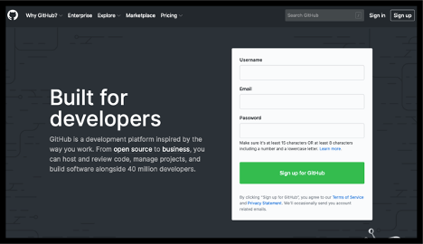
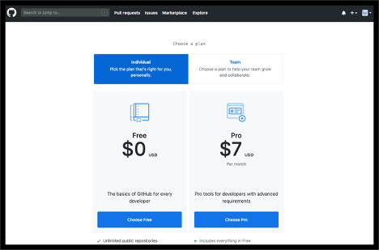
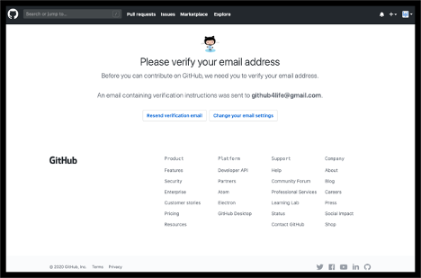
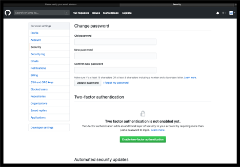
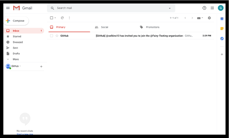
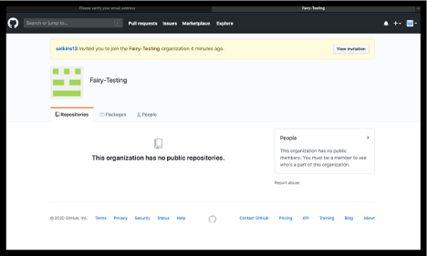

There are several steps that must be done to gain access to the org-name organization:
- Step 1: GitHub.com Account
- Step 2: 2-Factor Authentication
- Step 3: Access to the org-name Organization
- Step 4: Accepting the Invitation
Step 1: GitHub.com Account
If you do not already have a GitHub.com account, please follow the steps outlined below.
If you already have a GitHub.com account, please add and/or verify you have done the following and proceed to Step 2: 2-Factor Authentication:
- Add your company email address, if you have one, to your GitHub profile emails.
- Add your human readable name to your GitHub profile.
Signing up for a GitHub account
To sign up for a GitHub.com account:
-
Open https://github.com/join in a web browser.
Note that Chrome, Firefox or Safari are preferred as Internet Explorer and Legacy Edge can have functionality issues.
 - Fill in the following information:
- Username
- This is a unique, personal username for yourself and can be whatever you like, as long as it is not already taken
- It will be visible to the public
- Email
- Use your company email if you have one
- You can add your personal email address in your profile later
- Password
- Your password needs to be unique to the site
- It must be at least 8 characters long and include a number and lowercase letters or 16 characters long with any combination of characters
- As you type your password into the field, it will be obscured for security reasons
- We recommend you use a password management tool if one is available
- Username
-
Once you have an entered an available username, valid email address, and acceptable password, click on the “Sign up or GitHub” button
-
The next page will verify that you are a human and not a robot

-
Click the “Verify” button in the middle of the “Verify your account” box and work the puzzle as instructed
- Once the puzzle is completed and the site has verified you are a human, select the “Next: Select a Plan” button at the bottom of the screen
- On this page, you must select a plan. For the now, please select the “Choose Free” option

-
GitHub would now like to know a little more about you as a user. Please select the information that best describes you and select “Complete Setup” at the bottom of the page
- Next, GitHub will send you an email to the address you registered. You must go to your email and validate it as instructed.
- If you do not find the email in your inbox, be sure to check your Spam/Junk folders
- Also, if you are using a “Focused” inbox, please be sure to go to your full Inbox if you do not find it as it may have been filtered from view

-
Open the email with a subject line stating “[GitHub] Please verify your email address”

-
In the body of the email, you will find a button labeled “Verify email address”. Select this button. It will open in a separate tab/window

- Now that you have your GitHub account, please add and/or verify you have done the following and continue to Step 2: 2-Factor Authentication:
- Add your company email address, if you have one, to your GitHub profile emails.
- Add your human readable name to your GitHub profile.
Step 2: 2-Factor Authentication
For the org-name, you must set up Two-Factor Authentication on your GitHub.com account prior to joining. To get this set up, please follow the instructions below.
If you already have a GitHub.com account and have 2FA set up, please proceed to Step3: Requesting access to the org-name Organization.
Setting up two-factor authentication
Your company requires you to have Two-Factor Authentication enabled on your GitHub.com account prior to joining their organization. Your GitHub.com account is a personal account, so you will need to utilize your personal phones to do so.
Please follow the steps outlined below to set up your Two-Factor Authentication (2FA). Be sure to use Chrome, Firefox or Safari for this as there are know functionality issues with Internet Explorer and Legacy Edge.
-
Log into GitHub.com with your personal account
-
Go to your profile settings page by clicking on your profile icon in the top right of the page to open the drop down and select “Settings”

-
Once you are on your profile settings page, select “Security” in the left menu
 -
Select the “Enable two-factor authentication” button in the middle of the page
You now have two options for setting up two-factor authentication:
OPTION 1
-
If you choose to use text messages (SMS) as your 2FA option, please use the steps below. If you prefer to a mobile app to setup 2FA, please skip to Option 2.
-
Select the “Set up using SMS” option

-
Download, print, or save a copy of your recovery codes. You will not be able to recover your lost account if you do not

-
Once you have saved you recovery codes, select “Next”
-
Select the correct country code, enter your cell phone number in the field, and select “Send authentication code”

-
Retrieve the code from your cell phone, enter it into the correct field, and select “Enable”
-
You have now completed the 2-Factor Authentication setup via SMS. Please continue to Step3: Requesting access to the org-name Organization.
Option 2
If you choose to use a mobile app to setup 2FA such as ID.me, Authy or Google Authenticator (any app that supports the TOTP protocol will work, so you may already have one of these) follow the steps below.
-
Select the “Set up using an app” option
-
Download, print, or save a copy of your recovery codes. You will not be able to recover your lost account if you do not
-
Once you have saved you recovery codes, select “Next”
-
Follow the instructions provided by your app to scan the code

-
Then confirm your setup by typing one of the 2FA numbers it provides.
-
You have now completed the 2-Factor Authentication setup via mobile app. Please continue to Step3: Requesting access to the org-name Organization.
Step 3: Access to the org-name Organization
Once you have your GitHub.com account and have set up 2FA, you will need to request access to the org-name organization. You or someone who has access to the requesting site may need to request your access.
Step 4: Accepting the Invitation
Once you have requested access, you will receive an email from GitHub.com to accept the invitation to the org-name organization. Please follow the steps below to complete this.
Accepting your invitation to the organization
To accept your invitation to the org-name organization within GitHub.com:
-
Open the invitation email you received. It could be located in your Inbox, External box, Spam/Junk
 -
Click on the “Join @…” link in the body of the email

-
If you cannot find the invitation in your email, you can navigate directly to the organization’s page and select “View invitation”
 -
Select “Join …” for the organization want to join.

-
You have now joined the organization and can be added to repositories and teams by the repository administrators.